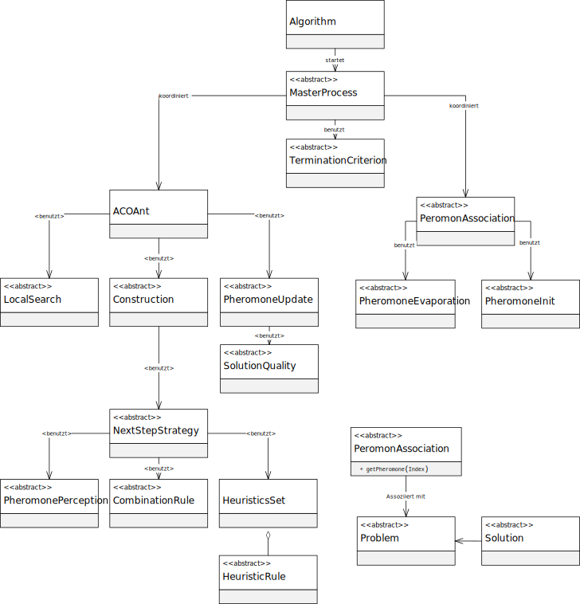

Package eu.andredick.aco
ACO-Komponenten, generalisierte und an SCP angepasste
Komponenten:
- Algorithm (Algorithmus)
eu.andredick.aco.algorithm - Ant (Ameise)
eu.andredick.aco.ant - CombinationRule (Kombinationsfunktion)
eu.andredick.aco.combination - Construction (Konstruktionsheuristik)
eu.andredick.aco.construction - HeuristicRule (Heuristische Informationen)
eu.andredick.aco.heuristic - LocalSearch (Lokale Suche)
eu.andredick.aco.localsearch - MasterProcess (Masterprozess)
eu.andredick.aco.masterprocess - NextStepStrategy (Alternativenauswahl)
eu.andredick.aco.nextstep - PheromoneAssociation (Pheromon-Assoziation)
eu.andredick.aco.pheromoneassociation - PheromoneInit (Pheromon-Initiierung)
eu.andredick.aco.pheromoneinit - PheromonePerception (Pheromon-Wahrnehmung)
eu.andredick.aco.pheromoneperception - PheromoneUpdate (Pheromon-Markierung)
eu.andredick.aco.pheromoneupdate - Problem (Problem)
eu.andredick.aco.problem - SolutionQuality (Qualitätsfunktion)
eu.andredick.aco.solutionquality - TerminationCriterion (Abbruchkriterien)
eu.andredick.aco.termination
UML-Klassendiagramm (generalisierte Ebene):

-
Class Summary Class Description aco